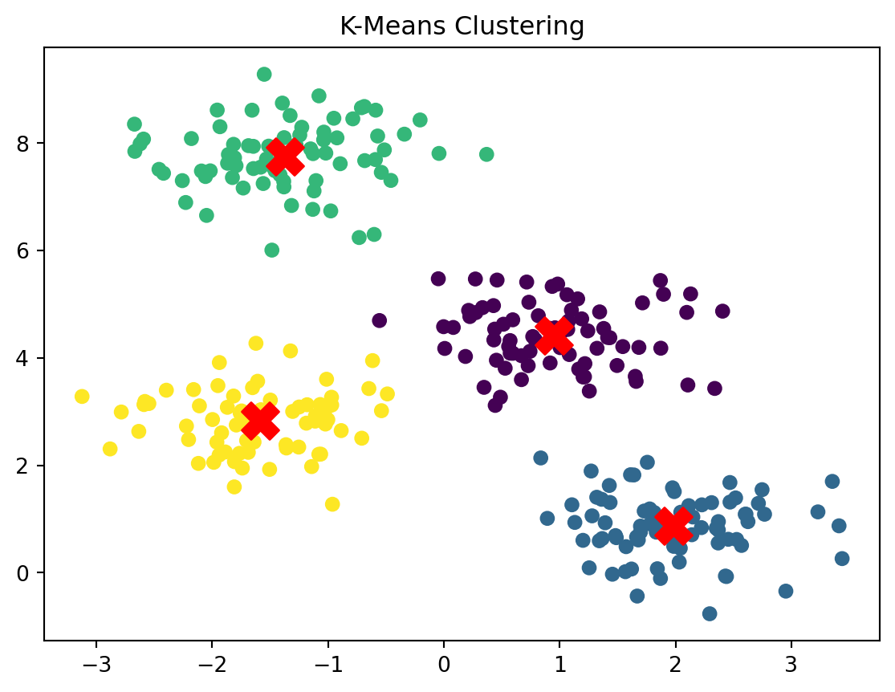
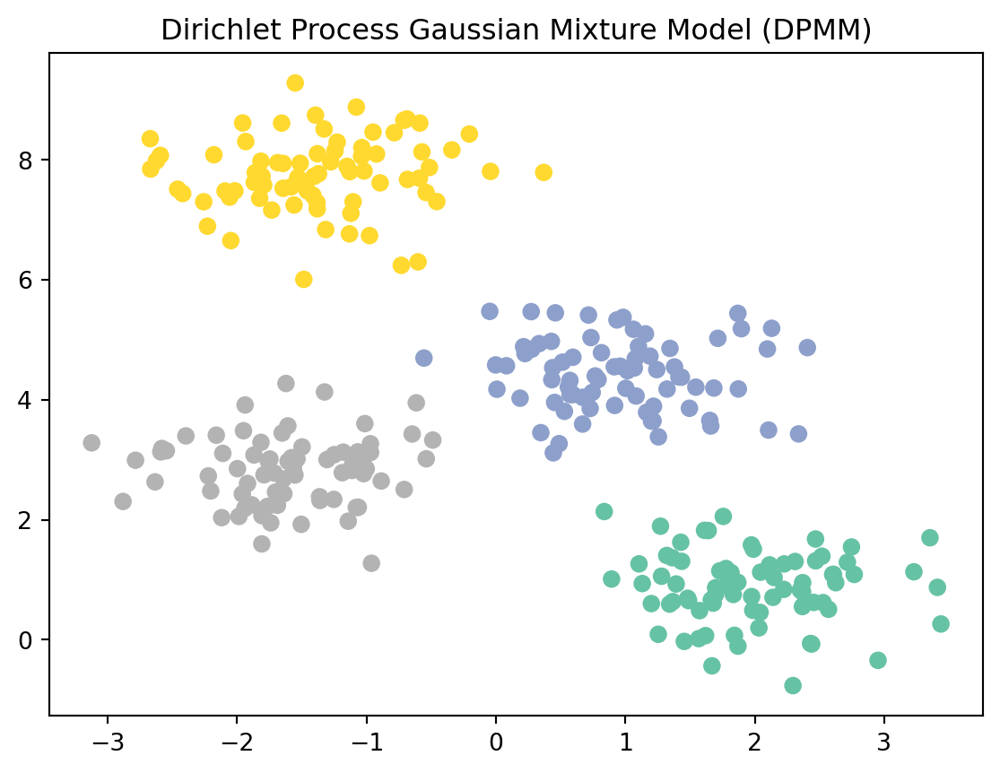

Clustering Methods for Categorical and Continuous Data: A Comprehensive Guide
Published
March 1, 2025
Introduction to Clustering
Clustering is a foundational technique in unsupervised machine learning. It helps us find natural groupings in data without having pre-labeled categories. Whether we’re analyzing customers, genes, images, or survey responses, clustering lets us identify patterns and structure in our data. This makes it a critical tool in data science, especially for exploratory data analysis and pattern discovery.
Why is clustering so useful? Because it simplifies complex datasets. Imagine trying to make sense of thousands of customer records. Clustering can help group them based on behavior or preferences, making it easier to target marketing strategies or identify needs.
Categories of Clustering Methods
Clustering methods generally fall into three main categories:
Model-Based Clustering: Assumes the data is generated by a mixture of underlying statistical distributions (like Gaussians or multinomials). Examples: Gaussian Mixture Models (GMM), Latent Class Analysis (LCA), Dirichlet Process Mixture Models (DPMM).
Hierarchical Clustering: Builds a tree of clusters either by merging (agglomerative) or splitting (divisive) data points. Examples: AGNES, DIANA.
Distance-Based Clustering: Forms clusters based on a chosen distance metric. Examples: K-Means, K-Modes, K-Prototypes, DBSCAN.
Clustering Methods for Continuous Data
When your dataset is made up of numerical values- like age, income, temperature, coordinates, or test scores- you’re working with continuous data.
The good news? -Most classic clustering algorithms are designed for continuous data! Why? Because it’s easy to calculate distances between numerical points using measures like Euclidean distance (the straight-line distance between two points).
Let’s break down the main types of clustering that work well with continuous data:
Model-Based: Gaussian Mixture Models (GMM)
Imagine your data comes from a mix of several bell curves (aka Gaussian distributions). Each cluster is one of those bell curves, and the overall dataset is their mixture.
GMM says:
“Let’s model the data using a bunch of Gaussians and figure out which point most likely came from which one.”
This is called a probabilistic model-instead of assigning each point to one cluster definitively, it gives probabilities (soft assignments).
How it works:
Starts with a guess about how many Gaussians (clusters) there are.
Uses an algorithm called EM (Expectation-Maximization) to:
Estimate the probability each point came from each cluster.
Update the cluster shapes and centers based on those probabilities.
Repeats until everything stabilizes.
GMM assumes data is generated from a mix of multiple Gaussian distributions. Each cluster has its own mean and covariance. The Expectation-Maximization (EM) algorithm estimates which Gaussian most likely generated each point. This allows for soft clustering, where a point belongs to multiple clusters with different probabilities.
Strengths: Models elliptical clusters, handles soft assignments, supports statistical criteria like BIC for choosing the number of clusters.
Limitations: Assumes Gaussian shape, sensitive to initialization, can overfit.
Evaluation: BIC (for choosing cluster count), Silhouette score (based on likelihood or distance), ARI/NMI if ground truth is available.
Hierarchical clustering doesn’t just give you clusters- it builds a tree (called a dendrogram) showing how clusters form or split. You don’t have to decide on the number of clusters up front!
There are two main styles:
AGNES (Agglomerative Nesting)
Bottom-up approach.
-Start with each point as its own cluster.
-Merge the two closest clusters, step by step, until everything is one big cluster.
-Result: a dendrogram you can “cut” at any level to get your desired number of clusters.
DIANA (Divisive Analysis)
Top-down approach.
-Start with all points in one cluster.
-Split the cluster that’s most different inside itself.
-Keep splitting until each point is alone (or you stop earlier).
Single linkage: join the closest pair of points. Complete linkage: join based on the furthest points. Ward’s method: join clusters to minimize variance (often works best for compact clusters).
AGNES (Agglomerative) starts with each point as its own cluster and merges them iteratively based on linkage criteria (single, complete, average, or Ward’s).
DIANA (Divisive) starts with all data in one cluster and splits recursively.
Strengths: No need to pre-specify the number of clusters, provides dendrograms for visualization.
Limitations: Computationally expensive (O(n^2)), greedy – early mistakes can’t be corrected.
This is one of the most famous and widely used clustering methods.
K-means says:
“Let’s group the data into K clusters so that the points in each group are close to each other (based on average distance from the center).”
How it works:
-Pick K cluster centers (called centroids) to start- can be random. -Assign each data point to the nearest centroid. -Recalculate centroids as the average of all points assigned to them. -Repeat steps 2–3 until nothing changes.
It’s like playing tug-of-war- points shift between clusters as centroids move, until everyone’s happy.
K-means minimizes the within-cluster sum of squared distances. It uses centroids and Euclidean distance to assign points.
Strengths: Fast, scalable, interpretable.
Limitations: Requires specifying K, sensitive to outliers and initialization, assumes spherical clusters.
/opt/conda/lib/python3.11/site-packages/sklearn/cluster/_kmeans.py:1416: FutureWarning:
The default value of `n_init` will change from 10 to 'auto' in 1.4. Set the value of `n_init` explicitly to suppress the warning

Silhouette Score: 0.6819938690643478
Clustering Methods for Categorical Data
Clustering categorical data is a bit trickier than clustering numerical data. Why? Because many clustering algorithms (like k-means) rely on computing distances between data points—using things like Euclidean distance, which only make sense for numbers.
But categorical data—like “red”, “blue”, “yes”, “no”, “urban”, “rural”—can’t be directly averaged or subtracted. So we need methods that understand how to measure similarity without relying on numbers.
Model-Based: Latent Class Analysis (LCA)
What is it? Latent Class Analysis is like saying: “Let’s assume people (or data points) belong to hidden groups (called latent classes), and their answers to survey questions (or their attribute values) depend on which group they belong to.”
For example, in a survey:
People in Class A might often answer “Yes” to Q1 and Q2, and “No” to Q3.
People in Class B might answer the opposite.
How it works: LCA uses probabilities to model this. It says:
Each class has a profile (e.g., 80% chance of answering “Yes” to Q1).
Each person belongs to a class with a certain probability. Then it fits the best model using an algorithm called EM (Expectation Maximization).
Limitations: Assumes conditional independence, slow for large data, risk of overfitting.
Evaluation: BIC (for model selection), ARI/NMI (if ground truth exists).
Model-Based (Bayesian): Dirichlet Process Mixture Models (DPMM)
This is like LCA’s more flexible, Bayesian cousin. Instead of deciding beforehand how many clusters you want (like “K = 3”), it lets the data tell you!
The big idea:
Imagine a restaurant where each new customer either joins an existing table (cluster) or starts a new one.
Whether they start a new table depends on how many people are already sitting and a concentration parameter (α).
This is called the Chinese Restaurant Process, and it’s the intuition behind DPMM.
Strengths: Automatically determines the number of clusters, flexible, supports soft clustering.
Evaluation: Posterior probabilities, Predictive log-likelihood, ARI/NMI for known labels.
from sklearn.mixture import BayesianGaussianMixturefrom sklearn.datasets import make_blobsimport matplotlib.pyplot as plt# Fit DPMM (upper bound on number of components, but fewer are used)dpgmm = BayesianGaussianMixture( n_components=10, # maximum number of components covariance_type='full', weight_concentration_prior_type='dirichlet_process', weight_concentration_prior=0.5, # lower value → more clusters random_state=42)dpgmm.fit(X)labels = dpgmm.predict(X)probs = dpgmm.predict_proba(X)# Plot resultsplt.scatter(X[:, 0], X[:, 1], c=labels, cmap='Set2', s=40)plt.title('Dirichlet Process Gaussian Mixture Model (DPMM)')plt.show()

What’s Happening?
n_components=10: This sets the maximum number of clusters-not the actual number.
weight_concentration_prior: Lower values allow more small clusters. It’s like tuning α in the Chinese Restaurant Process.
Hierarchical: ROCK and Gower’s Distance
When clustering categorical data, we can’t use standard distances like Euclidean. So we need creative alternatives.
ROCK (Robust Clustering using Links) What makes ROCK special? It’s designed specifically for categorical or binary data. Instead of relying just on similarity between two points, it looks at how many common neighbors they have.
Imagine:
Person A is similar to B and C.
Person D is also similar to B and C. Then A and D should probably be in the same group—even if they’re not directly that similar!
It’s like friend-of-a-friend logic. This method merges clusters that are strongly interconnected.
ROCK merges clusters based on the number of common neighbors above a similarity threshold.
What is Gower’s Distance? It’s a way to calculate distance that works on mixed data- numerical, categorical, and even ordinal.
For each variable:
If it’s numeric: take the normalized difference.
If it’s categorical: 0 if they match, 1 if they don’t.
Then, average the distances. This gives a similarity that respects data types!
How it helps: Once you compute the distance matrix using Gower, you can use any hierarchical clustering method, like AGNES, and plot a dendrogram.
Gower + Hierarchical: Use Gower’s distance (handles mixed types) with standard hierarchical clustering.
Strengths: ROCK is robust to noise; Gower allows mixed-type clustering.
Limitations: Requires threshold tuning (ROCK), slow for large datasets, not commonly implemented.
Evaluation: Silhouette with Gower/Hamming distance, visual inspection via dendrogram.
Distance-Based: K-Modes
An extension of K-Means for categorical data. It uses the mode (most common value) instead of the mean and mismatch count (Hamming distance) as the distance. Why not k-means? Because k-means computes centroids using averages, which doesn’t work for categories like “dog” or “banana.”
K-Modes to the rescue:
It uses the mode (most frequent category) instead of the mean.
It measures distance by counting how many categories don’t match (like Hamming distance).
Example: If A = [“red”, “large”, “yes”] and B = [“blue”, “large”, “no”] Then they differ in 2 out of 3 features → distance = 2
Strengths: Fast, interpretable, handles large categorical datasets.
Limitations: Needs K upfront, sensitive to initialization, can be affected by high-cardinality categories.
Evaluation: Cost function (total mismatches), Silhouette (with Hamming distance), ARI/NMI.
Distance-Based for Mixed Data: K-Prototypes
The real world isn’t just numbers or categories—it’s both. Enter K-Prototypes, which combines:
K-means (for numerical features)
K-modes (for categorical features)
How it works:
Calculates numerical distance (Euclidean) and categorical mismatch.
Adds them together using a weight factor (γ) to balance them.
Combines K-Means and K-Modes to handle both numeric and categorical data. Uses Euclidean distance for numerics, Hamming distance for categoricals.
Silhouette Score: Measures how well a point fits within its cluster. Ranges from -1 (bad) to +1 (good). Works with Euclidean, Hamming, or Gower distance.
Dunn Index: Ratio of minimum inter-cluster distance to maximum intra-cluster diameter. Higher is better.
Davies-Bouldin Index (DBI): Measures average similarity between clusters. Lower is better.
Calinski-Harabasz Index (CH): Ratio of between-cluster dispersion to within-cluster dispersion. Higher is better.
Elbow Method: Plot of total within-cluster sum of squares vs K. Look for an elbow point.
BIC (Bayesian Information Criterion): Used in model-based clustering to balance model fit and complexity.
External Metrics (Need Ground Truth Labels)
Adjusted Rand Index (ARI): Compares cluster assignments with true labels. Ranges from -1 to 1.
Normalized Mutual Information (NMI): Measures mutual dependence between predicted clusters and true labels. Ranges from 0 to 1.
Purity: Fraction of dominant class members in each cluster. Simple but biased toward more clusters.
Conclusion
Clustering is a powerful tool for uncovering hidden patterns in data. Different methods are suited to different data types: - Use K-Means, GMM, or Hierarchical clustering with Euclidean distance for continuous data. - Use K-Modes, LCA, ROCK, or Gower-based methods for categorical data. - Use K-Prototypes or Gower for mixed datasets.
Evaluation is key. Use internal metrics like silhouette or BIC when ground truth isn’t available. Use external metrics like ARI and NMI when it is. Understanding both your data type and the assumptions of each algorithm is critical to choosing the right clustering technique.